사회조사분석사-2급 (2004-08-08 기출문제)
1과목: 조사방법론 I
1. 척도구성의 통계적 기법으로 옳지 않은 것은?
- 개별문항과 척도간의 상관분석
- 개별문항들에 대한 요인분석
- 개별문항에 대한 평균값과 표준편차의 산출
- 문항별 기준변수와의 상관관계 분석
(정답률: 44%)

2. 측정에 대한 설명으로 틀린 것은?
- 조작화 과정
- 측정대상자나 대상물 자체를 측정하는 것
- 질적 속성을 양적 속성으로 전환하는 작업
- 추상적· 이론적 세계와 경험적 세계를 연결시켜 주는 수단
(정답률: 48%)
3. 분석단위의 선택과 관련이 없는 것은?
- 경험적 연구문헌을 검토할 경우 그 연구에서 사용된 분석단위를 정확히 파악하여야 그 내용을 이해할 수 있다.
- 적절한 분석단위의 선정은 연구의 질을 결정한다.
- 분석단위로 조직이 포함될 수 있다.
- 분석단위 선정의 환원주의적 오류란 연구 결과 얻은 결론을 다른 수준의 분석 단위에 적용시키 오류를 말한다.
(정답률: 알수없음)
4. 면접원을 사용하는 조사 중 면접원에 의해 발생하는 편차(bias)가 가장 클 것으로 추정되는 것은?
- 전화 인터뷰조사
- 심층 인터뷰 조사
- 구조화된 질문지 사용 인터뷰
- 집단 면접조사
(정답률: 79%)
5. 다음중 연구하려고 하는 문제의 핵심적인 요소들을 분명히 알지 못할 때 질문지 작성의 전단계에서 실시하는 비지시적 방식의 조사는?
- 사전검사(pretest)
- 예비조사(pilot study)
- 본조사(main survey)
- 사례조사(case study)
(정답률: 알수없음)
6. 면접조사에 관한 설명으로 틀린 것은?
- 우편조사에 비해서 응답률이 높다.
- 무응답 문항을 줄일 수 있다.
- 면접자에 의한 편의(bias)가 발생할 수 있다.
- 전화조사에 비해 조사자에 대한 감독이 용이하다.
(정답률: 61%)
7. 한 조사연구기관에서는 최근 우리나라에서 중요한 사회적 이슈로 등장하고 있는 어떤 문제에 대한 여론주도층의 의견을 청취하고자 하였다. 이 경우 자료수집방법으로서 가장 적합한 것은?
- 대면적 면접조사
- 우편조사
- 전화조사
- On-Line 조사
(정답률: 0%)
8. 거트만(Guttman) 척도에서 응답자수가 400명, 문항수가 20개, 응답의 오차수가 80 이라면 이때의 재생계수는?
- 0.99
- 0.92
- 0.48
- 0.88
(정답률: 알수없음)
9. 기술적(descriptive) 조사에 대한 설명으로 틀린 것은?
- 기술적 조사는 현상에 대한 탐구와 명료화를 주목적으로 한다.
- 기술적 조사는 계획, 모니터링, 평가에 필요한 자료를 산출하기 위하여 자주 사용된다.
- 기술적 조사는 사회현상이 야기된 원인과 결과를 밝혀 정확히 기술하는 것이다.
- 기술적 조사는 행정실무자와 정책분석가들에게 가장 기본적인 조사도구이다.
(정답률: 47%)
10. 580개 초등학교 모집단에서 5개 학교를 임의표집하였다. 선택된 학교마다 2개씩의 학급을 임의선택하고, 또 선택된 학급마다 5명씩의 학생들의 임의선택하여 학생들이 학원에 다니는지 조사하였다. 이 표집방법은?
- 단순임의표집
- 층화표집
- 집락표집
- 계통표집
(정답률: 39%)
11. 의미분화척도(semantic differential scale)의 특성으로 옳지 않은 것은?
- 언어의 의미를 측정하기 위한 것으로, 응답자의 태도를 측정하는 데 적당하지 않다.
- 평가(evaluation)적 차원, 활동(activity)적 차원, 역동(potency)적 차원 등 다차원적 척도이다.
- 대립적인 형용사 쌍을 이용해서 측정한다.
- 의미적 공간에 어떤 대상을 위치시킬 수 있다는 이론적 가정을 사용한다.
(정답률: 알수없음)
12. 비례층화표본표집의 특징을 올바르게 설명한 것은?
- 각층의 인구를 하나의 소규모 모집단으로 간주하고, 각층의 모집단 인구규모에 비례하여 표집한다.
- 지역 또는 연령분포에 따라 조사대상인구를 저울질한다.
- 각 층별로 표집은 하되 무작위로 조사대상자를 선정한다.
- 각층의 모집단인구에 연령에 따라 각기 상이한 표본 표집률을 적용한다.
(정답률: 알수없음)
13. 예시된 설문 문항은 어떤 종류의 척도에 속하는가?
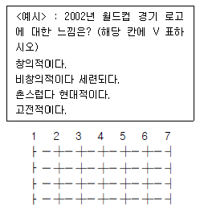
- 서스톤척도(Thurstone Scale)
- 리커트척도(Likert Scale)
- 거트만척도(Guttman Scale)
- 의미분화척도(Semantic Differential Scale)
(정답률: 36%)
14. 측정의 타당성(validity)에 대한 설명 중 틀린 것은?
- 동일한 대상의 속성을 반복적으로 측정할 때 동일한 측정결과를 가져올 수 있는 정도를 말한다.
- 측정의 타당성을 평가하는 방법으로는 액면타당성(face validity), 내용타당성(content validity), 성타당성(construct validity) 등이 있다.
- 일반적으로 측정의 타당성을 경험적으로 검증하는 일은 측정의 신뢰성(reliability)을 검증하는 것보다 어렵다.
- 측정의 타당성을 높이기 위해서는 측정하고자 하는 개념에 대하여 적절한 조작적 정의(operationaldefinition)를 갖는 것이 중요하다.
(정답률: 알수없음)
15. 우편조사시 취지문이나 질문지 표지에 반드시 포함되지 않아도 되는 사항은?
- 조사기관
- 조사목적
- 표본수
- 비밀유지보장
(정답률: 알수없음)
16. 다음의 상황에서 제대로 된 인과관계 추리를 위해 특히 고려되어야 할 인과관계 요소는?
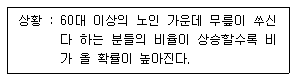
- 공변성
- 시간적 우선성
- 외생 변수의 통제
- 외부 사건의 통제
(정답률: 55%)
17. 면접조사시 면접원의 훈련에 대한 설명으로 적절치 못한 것은?
- 면접의 일반적인 지침과 과정에 대해 설명한다.
- 그 면접조사가 전반적으로 무엇을 연구하려는 것인지 를 가장 먼저 설명한다.
- 면접조사에 사용되는 질문지의 문항을 면접자 스스로 하나씩 잘 읽어보고 의문사항을 연구조사자에게 물어 보도록 한다.
- 연구조사자는 개개 면접자에게 20회 정도의 면접을 배정하고 면접을 마쳤을 때 면접원에게 질문지를 갖고 오도록 하여, 검토하고 나서 추가로 면접을 배정한다.
(정답률: 20%)
18. 다음 중 내용분석법을 사용하여 분석하기에 부적절한 연구주제는?
- 알코올이 운전행동에 미치는 영향 분석
- 한국 전래 동화에서 다루었던 주제 분석
- 유명작가의 문체분석
- 정신분열자의 언어 사용 분석
(정답률: 알수없음)
19. 선거예측조사에서 출구조사를 할 경우, 주로 사용되는 표집방법은?
- 할당표집(quota sampling)
- 체계적표집(systematic sampling)
- 군집표집(cluster sampling)
- 다단계유층표집(stratified sampling)
(정답률: 10%)
20. 다음 중 적정표본의 크기를 결정하는데 가장 적은 영향을 미치는 것은?
- 모집단의 이질성여부
- 통계분석의 기법
- 허용오차의 크기
- 척도의 종류
(정답률: 46%)
21. 관찰조사방법의 장점이 아닌 것은?
- 비공개 참여관찰의 경우 연구대상자의 비밀스런 행동 이나 판단을 조사할 수 있다.
- 장기적이고 정기적인 연구조사를 할 수 있다.
- 환경변수를 완벽하게 통제할 수 있다.
- 자연적인 연구환경이 확보되기 쉽다.
(정답률: 54%)
22. 다음은 어떤 자료수집 방법의 특성인가?
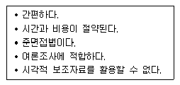
- 온라인 조사
- 전화조사
- 반구조화된 면접 조사
- 우편조사
(정답률: 63%)
23. 설문에 응한 응답자들을 가구당 소득에 따라 100만원 이하, 100만-200만원, 200만-300만원, 300만원 이상 등 네개의 집단으로 구분하였다면, 어떤 문제가 발생하는가?
- 상호배타성
- 순환성
- 포괄성
- 신뢰성
(정답률: 25%)
24. 다음 설문지의 질문 중 가장 올바른 것은?
- "미친 사람에 대한 당신의 반응은 어떻습니까?"
- "당신 아버지의 수입은 얼마입니까?"
- "어묵과 붕어빵을 파는 노점상들간에는 경쟁이 치열 합니까?"
- "당신의 국적은 어디입니까?"
(정답률: 80%)
25. 연구에서 선택된 개념을 실제 현상에서 측정이 가능하도록 관찰가능한 형태로 표현하는 것은?
- 구성요소적 정의(constitutive definition)
- 이론적 정의(theoretical definition)
- 조작적 정의(operational definition)
- 개념적 정의(conceptual definition)
(정답률: 80%)
26. 다음 중 질문 작성의 원칙으로 타당하지 못한 것은?
- 특수용어의 사용을 피한다.
- 감정적인 용어의 사용을 피한다.
- 이중구조(double-barreled) 질문을 하지 않는다.
- 응답범주를 비대칭적으로 구성한다.
(정답률: 알수없음)
27. 자동차 신모델이 개발되었을 때 고객들의 반응을 기능성, 심미성, 상징성 등의 여러 차원에서 평가하도록 하는 척도는?
- 서스톤척도(Thurston Scale)
- 리커트척도(Likert Scale)
- 거트만척도(Guttman Scale)
- 의미분화척도(Semantic Differential Scale)
(정답률: 알수없음)
28. 면접조사의 승패를 좌우하는 것으로서, 면접자와 응답자 사이에 친밀한 관계가 성립되는 것은?
- 래포(rapport)
- 프로빙
- 신뢰도
- 심층면접
(정답률: 73%)
29. 측정도구의 신뢰도를 측정하는 방법이 아닌 것은?
- 재조사법
- 집단비교법
- 복수양식법
- 크론바 알파
(정답률: 50%)
30. 다음 중 사전검사에서 반드시 고려하지 않아도 되는 사항은?
- 응답에 일관성이 있는지의 여부
- 한쪽에 치우치는 응답이 나오는가의 여부
- 응답자 집단이 동질적인가의 여부
- 응답자체의 거부 여부
(정답률: 72%)
2과목: 조사방법론 II
31. 다음 중 관찰방법의 특징이 아닌 것은?
- 연구대상의 행태에서 발생하는 사회적 맥락까지 포착 할 수 있다.
- 사회적 관계에 영향을 미치는 사건을 이해하도록 해준다.
- 객관적 사실에 치중하여 피관찰자의 철학, 세계관은 배제한다.
- 다른 연구와의 비교는 규칙성을 확인시켜 준다.
(정답률: 36%)
32. 가설설정에서 유의해야 할 사항이 아닌 것은?
- 가설은 항상 실증적으로 검증 가능해야 한다.
- 가설은 가치 중립적인 성질을 띠어야 한다.
- 가설의 조작적 정의는 추상적인 성질을 띤다.
- 가설은 구체적인 성질의 것이어야 하며, 그 뜻이 명쾌하여야 한다.
(정답률: 50%)
33. 측정의 표준오차에 대한 설명으로 맞는 것은?
- 표준화 검사에서의 오차
- 표준편차를 계산하는데 포함되는 오차
- 검사점수를 중심으로 하는 오차의 범위
- 규준을 만드는데 포함되는 오차
(정답률: 알수없음)
34. 지수나 척도와 같이 합성 측정(composite measures)을 이용하는 주요 이유는?
- 신뢰도를 높일 수 있기 때문이다.
- 외적 타당도를 높일 수 있기 때문이다.
- 타당도 계수를 높일 수 있기 때문이다.
- 하나의 개념이 갖는 다양한 의미에 대하여 포괄적인 측정을 할 수 있기 때문이다.
(정답률: 60%)
35. 측정도구의 신뢰도 평가기준으로 틀린 것은?
- 안정성
- 정확성
- 일관성
- 유의미성
(정답률: 67%)
36. 주부들의 환경의식을 조사한 질문의 응답 예가 <표>와 같다. 각 문항 점수를 합산하여 환경의식수준을 측정한다면 측정의 수준은?
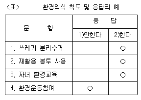
- 명목척도
- 서열척도
- 등간척도
- 비율척도
(정답률: 29%)
37. 조사연구의 오류 중 사회현상에 대한 설명을 경제적 변수에 한정하여 설명하거나 심리적 요인에만 한정하여 설명하는 오류는?
- 생태주의적 오류
- 환원주의적 오류
- 제1종 오류
- 제2종 오류
(정답률: 54%)
38. 「 일직선으로 도표화된 척도의 양극단에 서로 상반되는 형용사를 배열하여 양극단 사이에서 해당 속성에 대한 평가를 하는 척도이다. 이 척도는 일반적으로 의견이나 태도를 몇 개의 차원에 따라 측정함으로서 그 차이를 좀 더 정확하고자 하는 의미를 말한다.」이에 해당하는 척도법은?
- 서스톤척도(Thurston Scale)
- 어의차이척도(Semantic Differential Scale)
- 거트만척도(Guttman Scale)
- 리커트척도(Likert Scale)
(정답률: 알수없음)
39. 전화면접에서 선택된 전화번호를 갖는 가구원중 면접대상자를 누구로 삼을 것인가를 결정할 때 이용할 수 있는 방법과 거리가 먼 것은?
- 키시(Kish) 표
- 생일법
- 트로달/카터 수정표
- 난수표
(정답률: 8%)
40. 다음 외국인노동자의 도입에 대한 찬성유무를 묻는 질문 중 가장 잘못된 부분은?
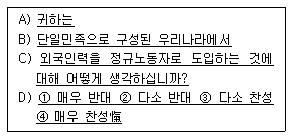
- A
- B
- C
- D
(정답률: 알수없음)
41. 남학생 300명, 여학생 200명이 재학중인 어떤 고등학교에서 남녀학생들의 컴퓨터 사용정도와 그 요인들을 살펴보기 위해 설문조사를 실시하고자 한다. 연구자는 이미 남녀학생간의 컴퓨터 사용정도의 차이가 큰 것을 알고, 전체 학생을 남녀학생별로 나눈 후 각 집단에서 남학생 100명, 여학생 100명을 단순무작위로 추출하였다. 여기에 관련된 표본추출방법은?
- 할당(quota)표집
- 집락(cluster)표집
- 층화(stratified)표집
- 의도적(purposive)표집
(정답률: 39%)
42. 어떤 유통업체에서 고객만족도에 관한 척도를 개발했다. 이 측도를 계속적으로 사용해 본 결과 언제나 비슷한 결과를 얻었다. 그리고 고객만족도에 관한 또다른 척도와의 연관성을 검정한 결과 그 관계는 상당히 낮은 것으로 판명 되었다. 이 척도에 관한 설명으로 옳은 것은?
- 신뢰성은 있지만 타당성은 없다.
- 타당성은 있지만 신뢰성은 없다.
- 신뢰성과 타당성이 모두 낮다.
- 신뢰성과 타당성의 유무를 알 수 없다.
(정답률: 64%)
43. 표집(sampling)의 대표성에 대한 설명으로 틀린 것은?
- 표본을 이용한 분석결과가 일반화될 수 있는가의 문제
- 표본자료가 계량통계분석기법을 적용하기에 적합한가의 문제
- 표본의 통계적 특성이 모집단의 통계적 특성에 어느 정도 근접하느냐의 문제
- 표본이 모집단이 지닌 다양한 성격을 고루 반영하느냐의 문제
(정답률: 알수없음)
44. 사회과학에서 척도를 구성하는 이유로서 틀린 것은?
- 측정의 신뢰성을 높여준다.
- 변수에 대한 질적인 측정치를 제공한다.
- 하나의 지표로 측정하기 어려운 복합적인 개념들을 측정한다.
- 여러개의 지표를 하나의 점수로 나타내어 자료의 복잡성을 덜어준다.
(정답률: 알수없음)
45. 비확률표집에 대한 설명으로 맞는 것은?
- 비용과 시간이 많이든다.
- 모수추정에 편의(bias)가 있다.
- 표본분석결과의 일반화가 가능하다.
- 연구대상이 표본으로 추출될 확률이 알려져 있다.
(정답률: 50%)
46. 다음 중 확률표본추출법이 아닌 것은?
- 단순무작위표본추출법(simple random sampling)
- 층화무작위표본추출법(stratified random sampling)
- 할당표본추출법(quota sampling)
- 군집표본추출법(cluster sampling)
(정답률: 알수없음)
47. 집합단위의 자료를 바탕으로 개인의 특성을 추리할 때에 저지를 수 있는 오류는?
- 알파 오류(α -fallacy)
- 베타 오류(β -fallacy)
- 개인주의적 오류(individualistic fallacy)
- 생태학적 오류(ecological fallacy)
(정답률: 알수없음)
48. 통계분석기법을 활용한 척도구성기법으로 옳지 않은 것은?
- 개별문항과 척도간의 피어슨의 상관계수를 산출한다.
- 여러개 문항들의 요인분석을 실시하여 고유값이 1보다 큰 것을 선택한다.
- 기준변수와 개별문항의 상관관계를 검토한다.
- 개별문항의 평균값과 표준편차를 산출한다.
(정답률: 22%)
49. 관찰된 결과를 기초로 일련의 일반화 과정을 거쳐 이를 이론화시키는 방법은?
- 탐색적 방법
- 연역적 방법
- 귀납적 방법
- 통계적 방법
(정답률: 알수없음)
50. 우편조사는 일반적인 우편조사와 패널을 구성한 우편패널 조사가 있다. 다음 중 우편패널조사에 대한 설명으로 옳지 않은 것은?
- 패널은 반드시 모집단을 대표할 수 있는 표본으로서 일반적으로 모집단이 작은 경우 이용된다.
- 정기적이고 반복적인 조사에 동의하는 응답자들로 패널은 구성되어 있다.
- 패널로 참여하는 응답자에게는 선물이나 인센티브를 주는 것이 일반적이다.
- 대부분의 우편패널조사는 다시점 연구(longitudinal research)의 형태를 취한다.
(정답률: 50%)
51. 표본추출에서 오차를 줄이기 위한 노력이 아닌 것은?
- 가능한 표본으로 추출될 동등한 기회를 부여한다.
- 가능한 표본 크기를 많이 한다.
- 조사자의 주관적 해석을 삼가한다.
- 동질적인 모집단은 이질적 모집단보다 오차를 줄일 수 있다.
(정답률: 15%)
52. 1990년에 특정한 3개 고등학교(A,B,C)를 졸업한 졸업생들 을 대상으로 향후 10년간 매년 일정시점에 조사를 한다면 이것은 무엇인가?
- 횡단조사
- 서베이 리서치
- cohort조사
- 사례조사
(정답률: 50%)
53. 다음 중 집단조사의 단점이 아닌 것은?
- 피조사자를 한 장소에 모으는 것이 쉽지 않은 경우가 있다.
- 집단상황이 응답을 왜곡시킬 가능성이 있다.
- 피조사자의 수준이 동일하다고 가정하는 오류를 범할수 있다.
- 응답의 누락이 많다.
(정답률: 60%)
54. 원래 측정하고자 한 영역이나 범위를 얼마나 잘 측정했는가를 설명하는 개념은?
- 내용타당도
- 동시타당도
- 예언타당도
- 구상체타당도
(정답률: 43%)
55. 기준타당도(criterion-related validity)와 관련한 설명으로 옳지 않은 것은?
- 기존의 척도와 새로운 척도를 비교할 경우에 사용 한다.
- 요인분석(factor analysis)을 통해 검증하기도 한다.
- 미래에 발생할 사건을 잘 예측하면 타당도가 높다고 평가한다.
- 상관계수로 측정하는 것이 보통이다.
(정답률: 19%)
56. 조사항목의 완성은 질문지 설계에 있어 가장 어려운 단계 라고 할 수 있다. 다음 중 조사항목의 완성에서 고려해야할 사항은?
- 다양한 정보의 획득을 위해 한 질문에 두 가지 이상의 요소가 포함되는 것이 바람직하다.
- 질문의 용어는 응답자 모두가 이해할 수 있도록 이해력이 낮은 사람의 수준에 맞춰야 한다.
- 사회적· 윤리적 연구에서는 긍정· 부정적 의미의 문항은 응답자가 직접 기술하는 문항으로 구성해야 타당도가 높아진다.
- 질문지의 용이한 작성을 위해 일정한 방향을 유도하는 문항을 가지는 것이 필요하다.
(정답률: 70%)
57. 다음 중 두줄기 질문(이중적 질문)의 예로서 적절한 것은?
- 현 대통령의 재벌개혁은 성공을 거두었다고 생각하십니까? 그렇지 못하다고 생각하십니까?
- 현재의 국공립대학 입시제도를 개선하고 입학정원을 계속 늘리자는 주장에 어떻게 생각하십니까?
- 귀하는 현재의 운전면허와 관련하여 삼진 아웃을 규정하는 법률에 어느 정도 찬성하고 계십니까?
- 현재 선진국의 실업률은 10%를 넘고 있습니다. 이들과 비교할 때, 우리나라의 실업률 7%는 높은 편이라고 할 수 있습니까?
(정답률: 55%)
58. 모든 요소의 총체로서 조사자가 표본을 통해 발견한 사실들을 토대로 하여 일반화하고자 하는 궁극적인 대상을 지칭하는 것은?
- 표본추출단위(sampling unit)
- 표본추출분포(sampling distribution)
- 표본추출 프레임(sampling frame)
- 모집단(population)
(정답률: 67%)
59. 다음 중 반분법에 대한 설명이 아닌 것은?
- 한번의 조사로 신뢰도를 계산할 수 있다.
- 크론바하의 알파값을 구하여 신뢰도를 계산한다.
- 설문지나 시험지를 두 부분으로 나누어 측정한다.
- 상관계수를 이용하는 방법이다.
(정답률: 22%)
60. 최근 법원의 판결에 따르면 성전환자도 호적의 성별을 바꿀 수 있게 되었다. 성전환에 대한 일반 국민의 의식을 조사하는 설문지를 만들 때 가장 주의해야 할 점은?
- 규범적 응답의 억제
- 복잡한 질문의 회피
- 평이한 언어의 사용
- 즉시적 응답 유도
(정답률: 알수없음)
3과목: 사회통계
61. 어떤 자격시험의 과거 성적분포가 근사적으로 평균이 70, 표준편차가 8인 정규분포를 따른다고 한다. 내년에도 비슷한 수준의 자격시험을 실시할 예정이며 과거의 성적분포에 따른 상위 30%에 해당하는 점수를 얻으면 합격시키려 한다. 내년 시험에 합격하기 위해서는 몇 점을 받아야하는가? (단, 표준정규분포에서 P ( Z ≤ 0.52 ) = 0.7)
- 74.16점
- 75.6점
- 76.4점
- 78.84점
(정답률: 알수없음)
62. 동일 신뢰수준에서 모비율 θ 에 대한 신뢰구간의 길이를 절반으로 줄이기 위하여는 표본크기를 몇 배로 하여야 하는가?
- √2 배
- 2배
- 4배
- 1/4배
(정답률: 73%)
63. 다음 중 제1종의 오류를 범할 확률의 허용한계를 뜻하는 통계적 용어는?
- 유의수준
- 기각역
- 검정 통계량
- 대립가설
(정답률: 알수없음)
64. 크기 N＝300 명의 모집단에서 남자는 N1＝212 명, 여자는 N2＝88 명이다. 층화임의표집을 사용하여 n＝60 명의 표본을 추출하려한다. 이 경우 최적배정 공식은 다음과 같이 주어진다. nh ∝ Nh σh / √ch (σh＝층의 모표준편차, ch＝층의 단위 표집비용) 만일 σ1＝10, σ2＝5, c1＝1, c2＝2라면 층 표본크기 n1과 n2를 계산하면?
- n1＝42, n2＝18
- n1＝45, n2＝15
- n1＝48, n2＝12
- n1＝52, n2＝8
(정답률: 10%)
65. 다음 분산분석표의 ( ) 값이 옳은 것은?
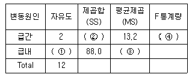
- ① = 9
- ② = 6.6
- ③ = 8.8
- ④ = 3.0
(정답률: 40%)
66. 5개의 주어진 확률표본으로부터
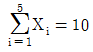
과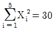
을 얻었다면, 분산의 불편추정치는?- 2.5
- 3
- 2
- 10
(정답률: 9%)
67. 모든 조건이 동일하다면, 표본의 수를 네 배로 늘릴 때 표본평균의 신뢰구간은?
- 4배로 넓어진다.
- 2배로 넓어진다.
- 1/2로 준다.
- 1/4로 준다.
(정답률: 알수없음)
68. 단순회귀분석에서 회귀직선과 독립변수와 종속변수의 상관계수와의 관계를 설명한 것 중 옳은 것은?
- 회귀직선의 기울기가 양수이면 상관계수도 양수이다.
- 회귀직선의 기울기가 양수이면 상관계수는 음수이다.
- 회귀직선의 기울기가 음수이면 상관계수는 양수이다.
- 회귀직선의 기울기가 양수이면 공분산이 음수이다.
(정답률: 알수없음)
69. 다음 10개의 자료의 대표값과 산포도가 맞게 짝지어진 것은?
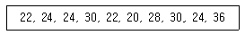
- 평균=26.0, 분산=25.00
- 중위수=24.0, 표준편차=4.90
- 최빈값=24.0, 표준편차=5.00
- 평균=26.5, 범위=16.00
(정답률: 59%)
70. 전구의 수명시간은 평균이 μ =800(시간)이고 표준편차는 σ =40(시간)이라고 할 때 무작위로 64개의 동일상표의 전구를 조사하였을 때 표본평균수명시간이 790.2시간 미만일 확률은?
- 0.01
- 0.025
- 0.⑤
- 0.10
(정답률: 50%)
71. 도수분포가 비대칭(skewed)이고 극단치들이 있을 때 보다 적절한 중심성향 척도는?
- 산술평균
- 중위수
- 최빈수
- 조화평균
(정답률: 알수없음)
72. 다음 중 회귀분석에 대한 설명으로 잘못된 것은?
- 회귀분석은 독립변수의 값에 대한 종속변수 값의 추정치와 예측치를 제공한다.
- 회귀분석은 독립변수와 종속변수간의 관계의 존재 여부는 알려주지만 수식으로 나타내지는 못한다.
- 회귀분석의 결과로 나온 독립변수와 종속변수간의 관계는 완전히 정확하지는 못하고 확률적이다.
- 회귀분석을 통해 우리는 종속변수의 값의 변화에 영향을 미치는 중요한 독립변수들이 무엇인지를 알 수 있다.
(정답률: 50%)
73. 두 모평균의 차이에 대한 검정을 실시할 때 틀린 설명은?
- 두 모집단에 대해 독립의 가정이 필요하다.
- 소표본에서 분산을 모르는 경우 t 검정을 실시한다.
- 소표본인 경우 모집단에 대해 통상적으로 정규분포를 가정한다.
- 대표본의 경우에는 분산을 모르는 경우에도 정규 (Z)검정을 실시한다.
(정답률: 20%)
74. 단순회귀모형Yi=α+βi+εi(i=1....n)의 회귀직선의 기울기 β 의 추정량
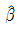
의 설명으로 옳은 것은?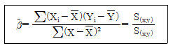
 는
는 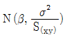
인 정규분포를 따른다.- σ22의 불편추정량은 잔차제곱평균
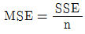
와 같다. 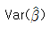
의 불편추정량은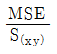
이다.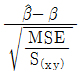
는 F 분포를 따른다.
(정답률: 0%)
75. 다음 결과에서 X와 Y의 상관계수 r을 계산하면? (
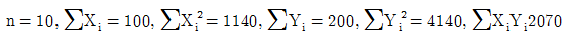
단,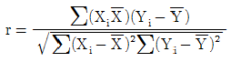
이다.)- 0.35
- 0.40
- 0.45
- 0.50
(정답률: 13%)
76. 모집단평균을 추정하기 위하여 단순임의추출법(simple random sampling)으로 표본을 추출하고자 할 때 동일조건하에서 복원(with-replacement)추출의 경우 표본의 수를 n0, 비복원(without-replacement)추출의 경우 표본의 수를 n이라 하면 이들의 관계는?
- n0 ＞n
- n0 ＜n
- n0 =n
- 알 수 없다.
(정답률: 28%)
77. 평균이 μ , 표준편차가 σ 인 분포에서 짝수 크기 n(=2m ) 의 임의표본(확률표본)을 추출하였을 때, 처음 m 개의 평균
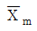
은 대략 어떤 분포를 따르게 되는가?- 평균이 μ이고 표준편차가 σ/√m인 정규분포
- 평균이 μ이고 표준편차가 σ/m인 정규분포
- 평균이 μ이고 표준편차가 σ/√n인 정규분포
- 평균이 μ이고 표준편차가 σ/n인 정규분포
(정답률: 19%)
78. 종속변수 Y 를 독립변수 X1과 X2로 설명하는 일반적인 선형회귀모형은?
- Yij=μ+αi+βj+(αβ)ij+εij
- Y=X1+X2+ε
- Y=α+βX1X2+ε
- Y=β0+β1X1+β2X2+ε
(정답률: 28%)
79. X1 , X2 , . . , Xn가 정규분포 N ( μ, σ2)에서 얻은 확률표본일 때 옳은 것은?
 는 N (0, σ2)에 따른다.
는 N (0, σ2)에 따른다.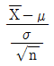
는 N (μ, 1)에 따른다. 는 N (1, σ2)에 따른다.
는 N (1, σ2)에 따른다. 는 N (0, 1)에 따른다.
는 N (0, 1)에 따른다.
(정답률: 8%)
80. 이라크 파병에 대한 여론조사를 실시했다. 100명의 한국인을 무작위로 추출하여, 이들에게 물었더니 56명이 찬성했다. 이 자료로부터 파병에 대한 찬성율 P가 과반수 이상이 되는지를 유의수준 5%에서 통계적 가설검정을 실시했다. 다음 중 옳은 것은?
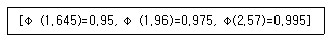
- 이 자료의 통계적 분석으로 한국인의 찬성률이 과반수 이상이라고 결론을 내릴 수 있다.
- 이 자료의 통계적 분석으로 한국인의 찬성률이 과반수 이상이라고 결론을 내릴 수 없다
- 이 자료의 통계적 분석으로 표본의 수가 부족해서 결론을 얻을 수 없다.
- 표본 중 과반수 이상이 찬성하여서 찬성률이 과반수이상이라고 결론을 내릴 수 있다.
(정답률: 17%)
81. 교육년수(x1)와 아버지의 교육년수(x2), 나이(x3)가 소득에 얼마나 영향을 미치는지 알아보기 위해 회귀분석을 하였다. 회귀모형은
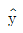
8.14+3.48x1+12.77x2+5.49x3로 구해졌다. 회귀계수를 표준화시켜 구한 회귀모형은 = 8.14+2.88x1+1.69x2+1.89x3이었다. 세변수 중 체중에 가장 많은 영향을 미치는 변수는?
= 8.14+2.88x1+1.69x2+1.89x3이었다. 세변수 중 체중에 가장 많은 영향을 미치는 변수는?- 교육년수
- 아버지의 교육년수
- 나이
- 비교할 수 없다
(정답률: 34%)
82. 다음의 상황에 알맞은 검증방법은?
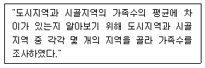
- 독립표본 t -검증
- 더빈 왓슨검증
- X2 -검증
- F -검증
(정답률: 42%)
83. 두개의 확률변수 X 와 Y 가 독립일 때 틀린 것은?
- E(XY) = E(X)E(Y)
- COV(X,Y) = 0
- V(X+Y) = V(X) + V(Y)
- V(X-Y) = V(X) - V(Y)
(정답률: 19%)
84. S = 27, N=60이면 총자승합(total sum of squares)은? (단,
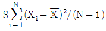
)- 1593
- 1620
- 1693
- 1742
(정답률: 43%)
85. 정규분포를 따르는 어떤 집단의 모평균이 10인지를 검정하기 위하여 크기가 25인 표본을 추출하여 관찰한 자료의 표본평균은 9, 표본표준편차는 2.5였다. t검정통계량을 사용할 경우 통계치는?
- 2
- 1
- -1
- -2
(정답률: 알수없음)
86. 모분산이 25인 정규모집단에서 추출한 표본평균(
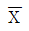
)을 가지고 모평균(μ)을 추정하되 최대오차가 2를 넘지 않을확률이 99%인 신뢰구간을 찾으려면 표본크기는 최소한 얼마가 되어야 하는가? (단 Ζ α/2 =2.575, 99% 신뢰구간)- 30
- 40
- 42
- 51
(정답률: 27%)
87. 표본의 크기를 n=10에서 n=160으로 증가한다면, n=10에서 얻은 평균의 표준오차는 몇 배로 증가하는가?
- 1/4
- 1/2
- 2
- 4
(정답률: 55%)
88. 자료의 산포를 측정하는 통계량 중 통계량의 단위가 나머지와 다른 것은?
- 분산
- 범위
- 사분위범위
- 표준편차
(정답률: 46%)
89. 지역과 비료의 종류에 따라 토마토 생산량에 차이가 있는지를 확인하기 위하여 4개 지역에서 각각 A,B,C 세 종류의 비료를 적용시킨 후에 생산량을 조사하였다. 지역과 비료의 종류에 따라 생산량에 차이가 있는가를 알고 싶다면 어떤 통계분석 방법을 실시해야 하는가?
- 분할표 분석
- 회귀분석
- 분산분석
- 상관분석
(정답률: 알수없음)
90. 자동차 경주에서 A가 이길 확률이 1/7, B는 A의 두배, C는 B의 두배 일 때, C가 경주에서 이길 확률은?
- 1/4
- 2/5
- 3/6
- 4/7
(정답률: 46%)
91. 다음 통계량의 설명 중 틀린 것은?
- 변이계수(Coefficient of Variation)는 여러 집단의 분산을 상대적으로 비교할 때 사용하며
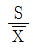
로 정의 된다. - Y=-2X + 3일때 sY = 4sX이다. 단, sX , sY는 각각 X와 Y의 표준편차를 나타낸다.
- 상자그림표(Box plot)는 여러 집단의 분포를 비교하는데 많이 사용한다.
- 상관계수가 0 이라 하더라도 두 변수의 관련성이 있는 경우도 있다.
(정답률: 알수없음)
92. 회귀분석에서 관찰값과 예측값의 차이를 무엇이라고 하는가?
- 오차(error)
- 편차(deviation)
- 잔차(residual)
- 거리(distance)
(정답률: 알수없음)
93. 다섯수치 요약이 다음과 같을 때, 범위와 4분위수간 거리(IQR)는 얼마인가?
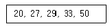
- (30, 23)
- (30, 6)
- (50, 6)
- (20, 9)
(정답률: 60%)
94. 다음 중 상관관계 분석에 관한 설명으로 틀린 것은?
- 독립변수의 값에 기초하여 종속변수의 값을 추정하고 예측하게 한다.
- 두 변수간의 상호관계와 상호변이에 대한 분석이다.
- 상관계수 측정으로 스피어맨 측정치를 사용한다.
- 표준화된 공분산의 값이 1에 가깝다는 것은 두 변수가 서로 의존적이며 상호관계가 있는 것으로 간주한다.
(정답률: 알수없음)
95. 중회귀분석에서 회귀제곱합(SSR)이 150이고 오차제곱합(SSE)이 50인 경우, 결정계수는?
- 0.25
- 0.3
- 0.75
- 1.1
(정답률: 알수없음)
96. 불량률이 0.⑤인 제품을 20개씩 한 box에 넣어서 포장하였다. 10개의 box를 구입했을 때, 기대되는 불량품의 총갯수는?
- 1개
- 5개
- 10개
- 15개
(정답률: 30%)
97. 상관계수(rxy)에 대한 설명 중 틀린 것은?
- 상관계수 rxy는 두 변수 X와 Y의 산포의 정도를 나타낸다.
- -1 ≤ rxy ≤ +1
- rxy = 0 이면 두 변수는 무상관이다.
- rxy = ±1 이면 두 변수는 완전상관관계에 있다.
(정답률: 알수없음)
98. 다음은 당뇨병 환자들이 복용하는 두 가지 약의 효과를 비교하기 위해 두 약의 복용 후 효과가 나타나는 시간을 측정한 자료이다. 다음 설명 중 옳은 것은?
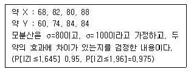
- 약 X의 평균은
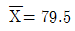
이고, 약 Y의 평균은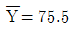
이므로 약 Y의 효과가 더 우수하다. 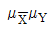
의 95% 신뢰구간이 4.0± 13.15이므로 두 약 효과간의 차이는 동일하다고 볼 수 있다.- 두 약의 효과가 동일하다는 귀무가설과 효과에 차이가 있다는 대립가설의 검정 통계량의 값이 0.567이므로 대립가설을 채택해야 한다.
 의 95% 신뢰구간이 (-9.15, 17.15)이므로 음수값을 포함하므로 귀무가설을 기각해야 한다.
의 95% 신뢰구간이 (-9.15, 17.15)이므로 음수값을 포함하므로 귀무가설을 기각해야 한다.
(정답률: 알수없음)
99. 여론조사 기관에서 특정 프로그램의 시청률을 조사하기 위하여 100명의 시청자를 임의로 추출하여 시청여부를 물었더니 이중 10명이 시청하였다. 이때 이 프로그램의 시청률에 대한 95% 신뢰구간을 구하면? (단, 표준정규분포를 따르는 확률변수 Z는 P(Z＞1.96)=0.025를 만족한다.)
- (0.0412, 0.1588)
- (0.⑤12, 0.1488)
- (0.0312, 0.1688)
- (0.0612, 0.1388)
(정답률: 알수없음)
100. 다음 가설검정에서 제2종 오류에 대한 설명으로 옳은 것은?
- 귀무가설(H0)이 참일때 귀무가설을 기각하는 경우의 확률
- 귀무가설(H0)이 참일때 대립가설(H1orHA)을 기각하는 경우의 확률
- 대립가설(H1)이 참일 때 대립가설을 기각하는 경우의 확률
- 대립가설(H1)이 참일때 귀무가설(H0)을 기각하는 경우의 확률
(정답률: 알수없음)